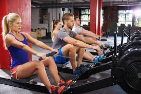

Descripción
Un gimnasio (conocido asimismo con el anglicismo gym) es un lugar que permite practicar deportes o hacer ejercicio en un recinto cerrado con varias máquinas y artículos deportivos a disposición de quienes lo visiten.
En los últimos años, el número de gimnasios ha aumentado considerablemente como respuesta al incremento en la demanda de servicios deportivos. Esta circunstancia ha provocado un creciente interés por parte de la población en servicios deportivos. Actualmente, los gimnasios son instalaciones deportivas de referencia para la promoción del deporte entre la población.

Rutinas de ejercicio
Estos son algunos consejos generales para una buena sesión de ejercicios que hará tu rutina segura y exitosa.
1. El calentamiento de los músculos es como un engrase del motor. Hara que tu cuerpo flexible funcione mejor con una adecuada rutina de calentamiento
2. Ponte derecho en el ejercicio. Hacerlos encorvado creará más espacio para las lesiones de espalda y cuello.
3. Utiliza todos sus músculos cuando haga ejercicios y en la gama completa. Esto te dará los resultados óptimos.
4. Mantén el control del peso de las pesas y la velocidad de los equipos de cardio.
5. Mantener una rutina a un ritmo más lento y controlado te dara más control del ejercicio y más resistencia.
| Ejercicios | Series | Repeticiones |
|---|---|---|
| Press de pecho en máquina | 3 | 12 |
| Peck deck | 3 | 12 |
| Remo al pecho en polea | 3 | 12 |
| Remo en polea baja con agarre estrecho | 3 | 12 |
| Prensa de piernas | 3 | 12 |
| Curl femoral tumbado | 3 | 12 |
| Rueda abdominal | 3 | 12 |
Ropa de entrenamiento
busca siempre camisetas elásticas de algodón y, sobre todo, que sean transpirables. Vernos sudar a lo loco no es demasiado agradable. En este sentido, te recomendamos prescindir de las camisetas grises, ya que, dentro de la reducida gama de colores típicos de gimnasio, es en la que más se nota el sudor.
La ropa vieja no es para el gimnasio
La ropa de gimnasio debe ser ropa adaptada al gimnasio, no cualquier cosa en desuso. Así que si no quieres desprenderte de una prenda específica porque la tienes cariño, úsala en tu tarde de peli y manta, no para hacer ejercicio. Ya nos lo agradecerás.
Adáptate a lo que te vaya a quedar bien...
A todos nos gustaría lucir lo que quisiéramos. Y puedes hacerlo, vaya, nadie te lo impide. Otra cosa muy distinta es que te vaya a quedar bien. Comprar ropa del gimnasio no es simplemente ir al Decathlon y llenar el carro de la compra, requiere una serie de normas que debes tener en cuenta, porque no todos los estilos encajan bien con cada el físico de cada uno. Estate atento, aquí van algunas pautas a seguir:
1. Si tienes un cuerpo escultural, elige camisetas cortas y sin mangas. Eso sí, no te las compres de dos tallas menos, porque te costará mucho más emplearte a fondo.
2. Si estás empezando y la única tableta es la que te comerás al salir del gym, opta por las camisetas anchas (tampoco XXL), también muy recomendables cuando vayas a realizar un ejercicio en el que sudes mucho.
3. Si eres bastante flaco, lo mejor es lucir una sudadera con capucha, que crea la sensación de un mayor volumen corporal.
Máquinas de entrenamiento
Tipos de máquinas de gimnasio
Banco press
Es una de las máquinas del gimnasio más básica que puedes encontrar. Consiste en un banco con un soporte para poder apoyar la barra.
Prensa de piernas
Es una máquina muy común en los gimnasios. El funcionamiento es muy sencillo, pues posee una plataforma que se debe empujar con las piernas.
Máquina de dorsales
Es una máquina muy reconocible puesto que posee un asiento y un sistema de poleas.
Bicicletas estáticas
Probablemente son las máquinas del gimnasio más reconocibles y seguro que muchos de vosotros las tenéis o habéis tenido en vuestra casa.
Ciclo Indoor
De apariencia son muy similares a las bicicletas estáticas, aunque sus funciones son diferentes.
Elípticas
De las más utilizadas en el gimnasio su mayor virtud es la ausencia de impacto.
Cintas de correr
Es una máquina que no necesita explicación… a correr!
Máquinas de remo
Máquina que simula la posición y el movimiento del deporte de remo.
